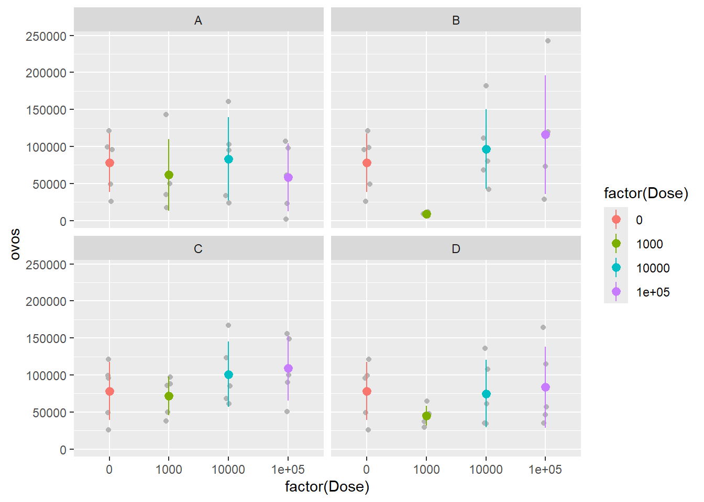
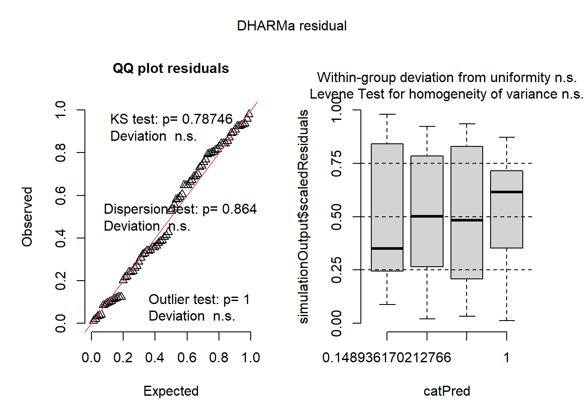
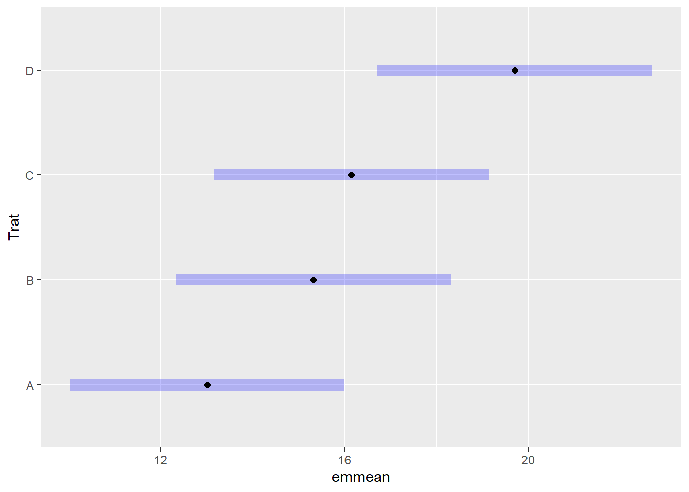
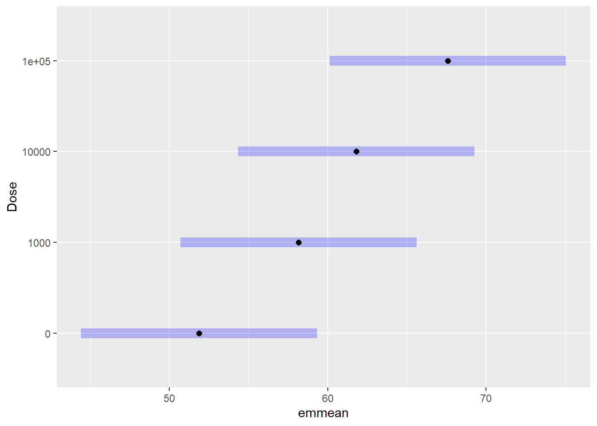

library(tidyverse)
library(readxl)
library(gsheet)
library(performance)
library(DHARMa)
library(multcomp)
library(multcompView)
library(emmeans)
library(MASS)
library(AgroR)
library(drc)
library(corrplot)
library(patchwork)Projeto Final
Pré-análise
Pacotes utilizados
Todos os pacotes utilizados durante o processo de análise foram carregados previamente.
Importação do conjunto de dados
O primeiro passo para qualquer análise de dados é a importação dos dados que serão trabalhados. O conjunto de dados do experimento foi importado de um arquivo Excel (.xlsx) através da função read_excel() do pacote readxl. O nome atribuído ao data frame foi controle.
controle <- read_excel("Controle biológico.xlsx")
controle# A tibble: 80 × 7
Trat Dose Rep MPAS MRF ovos ovosg
<chr> <dbl> <dbl> <dbl> <dbl> <dbl> <dbl>
1 A 0 1 22.4 69 121250 1757.
2 A 0 2 10.9 49.2 49000 996.
3 A 0 3 3.8 18.8 26000 1383.
4 A 0 4 11.9 57.3 99000 1728.
5 A 0 5 21.6 65.1 96000 1475.
6 A 1000 1 27 68.4 143000 2091.
7 A 1000 2 9.4 50.4 63000 1250
8 A 1000 3 21.8 46.7 35000 749.
9 A 1000 4 5.2 19.7 17500 888.
10 A 1000 5 15.5 64.5 50000 775.
# ℹ 70 more rowsAnálise exploratória dos dados
Para uma análise visual do conjunto de dados foi utilizado a função ggplot() do pacote tidyverse e diferentes formatos gráficos. Cada variável resposta foi visualizada de forma individual.
Gráfico de pontos: O gráfico de pontos possibilita a visualização dos dados coletados de forma individualizada. Esse tipo de gráfico é recomendado quando cada tratamento apresenta poucas repetições, para que não seja um gráfico poluído. Como o conjunto de dados em questão apresenta somente 5 repetições, o gráfico de pontos pode ser utilizado. Para construir esse gráfico foi utilizado o geom_jitter().
Gráfico de barra do erro: O gráfico de barra do erro possibilita visualizar a variabilidade dos dados em cada grupo, podendo ser utilizado como referência o desvio padrão ou o erro padrão. Nesse caso, utilizamos o desvio padrão que descreve o quão próximos os valores observados estão da média. A função stat_summary() com o argumento fun.data = "mean_sdl" foram utilizados para gerar a barra do erro e a média dos dados.
Para melhor visualização das variáveis respostas, utilizamos a “Dose” como um fator e adicionamos facetas com a função facet_wrap() para vizualizarmos os tratamentos separadamente.
Gráfico da massa da parte aérea seca (MPAS)
controle |>
ggplot(aes(factor(Dose), MPAS, color = factor(Dose)))+
geom_jitter(width = 0.05, color = "gray70")+
facet_wrap(~Trat)+
stat_summary(fun.data = "mean_sdl", fun.args = list(mult = 1))
Gráfico da massa da raiz fresca (MRF)
controle |>
ggplot(aes(factor(Dose), MRF, color = factor(Dose)))+
geom_jitter(width = 0.05, color = "gray70")+
facet_wrap(~Trat)+
stat_summary(fun.data = "mean_sdl", fun.args = list(mult = 1))
Gráfico do número de ovos por planta (ovos)
controle |>
ggplot(aes(factor(Dose), ovos, color = factor(Dose)))+
geom_jitter(width = 0.05, color = "gray70")+
facet_wrap(~Trat)+
stat_summary(fun.data = "mean_sdl", fun.args = list(mult = 1))
Gráfico do número de ovos por grama de raiz fresca (ovosg)
controle |>
ggplot(aes(factor(Dose), ovosg, color = factor(Dose)))+
geom_jitter(width = 0.05, color = "gray70")+
facet_wrap(~Trat)+
stat_summary(fun.data = "mean_sdl", fun.args = list(mult = 1))
Análise estatística e teste de hipóteses
O conjunto de dados do experimento apresenta dois fatores: Tratamento e Dose. Desse modo, é preciso realizar a análise de variância de dois fatores (Two-Way ANOVA) para cada uma das quatro variáveis respostas. As hipóteses a serem testadas para cada uma das variáveis resposta são três hipóteses nulas e três hipóteses alternativas.
Variável massa da parte aérea seca (MPAS)
- Hipótese nula 1 (H01): não há diferença na média da massa da parte aérea seca entre os diferentes níveis de Tratamento.
- Hipótese alternativa 1 (Ha1): há pelo menos uma diferença na média da massa da parte aérea seca entre os diferentes níveis de Tratamento.
- Hipótese nula 2 (H02): não há diferença na média da massa da parte aérea seca entre os diferentes níveis de Dose.
- Hipótese alternativa 2 (Ha2): há pelo menos uma diferença na média da massa da parte aérea seca entre os diferentes níveis de Dose.
- Hipótese nula 3 (H03): não há interação entre Tratamento e Dose. O efeito de Tratamento na massa da parte aérea seca é o mesmo para todas as Doses.
- Hipótese alternativa 3 (Ha3): existe uma interação entre Tratamento e Dose. O efeito de Tratamento na massa da parte aérea seca depende da dose aplicada.
Análise de variância (ANOVA)
Primeiramente foi realizada uma Two-Way ANOVA porque o conjunto de dados é um fatorial de tratamento e dose. Os dados foram primeiramente ajustados para o modelo de ANOVA usando a função lm(), a análise em si foi realizada utilizando a função anova(). A função summary() foi utilizada para visualização do resumo estatístico da ANOVA.
mf <- lm(MPAS ~ Trat*factor(Dose),
data = controle)
anova(mf)Analysis of Variance Table
Response: MPAS
Df Sum Sq Mean Sq F value Pr(>F)
Trat 3 462.83 154.276 3.8212 0.01393 *
factor(Dose) 3 125.63 41.877 1.0372 0.38218
Trat:factor(Dose) 9 716.19 79.576 1.9710 0.05743 .
Residuals 64 2583.95 40.374
---
Signif. codes: 0 '***' 0.001 '**' 0.01 '*' 0.05 '.' 0.1 ' ' 1summary(mf)
Call:
lm(formula = MPAS ~ Trat * factor(Dose), data = controle)
Residuals:
Min 1Q Median 3Q Max
-11.94 -3.22 -0.08 3.75 11.22
Coefficients:
Estimate Std. Error t value Pr(>|t|)
(Intercept) 1.412e+01 2.842e+00 4.969 5.31e-06 ***
TratB 8.445e-15 4.019e+00 0.000 1.0000
TratC -5.123e-16 4.019e+00 0.000 1.0000
TratD 6.091e-15 4.019e+00 0.000 1.0000
factor(Dose)1000 1.660e+00 4.019e+00 0.413 0.6809
factor(Dose)10000 -4.620e+00 4.019e+00 -1.150 0.2546
factor(Dose)1e+05 -1.460e+00 4.019e+00 -0.363 0.7176
TratB:factor(Dose)1000 -2.800e+00 5.683e+00 -0.493 0.6239
TratC:factor(Dose)1000 -5.500e+00 5.683e+00 -0.968 0.3368
TratD:factor(Dose)1000 8.640e+00 5.683e+00 1.520 0.1334
TratB:factor(Dose)10000 6.220e+00 5.683e+00 1.094 0.2779
TratC:factor(Dose)10000 1.024e+01 5.683e+00 1.802 0.0763 .
TratD:factor(Dose)10000 1.242e+01 5.683e+00 2.185 0.0325 *
TratB:factor(Dose)1e+05 5.820e+00 5.683e+00 1.024 0.3097
TratC:factor(Dose)1e+05 7.780e+00 5.683e+00 1.369 0.1758
TratD:factor(Dose)1e+05 5.720e+00 5.683e+00 1.006 0.3180
---
Signif. codes: 0 '***' 0.001 '**' 0.01 '*' 0.05 '.' 0.1 ' ' 1
Residual standard error: 6.354 on 64 degrees of freedom
Multiple R-squared: 0.3355, Adjusted R-squared: 0.1798
F-statistic: 2.154 on 15 and 64 DF, p-value: 0.01772Baseado na tabela de ANOVA, interpreta-se que o valor de “p” foi menor que o nível de significância (0,05) em relação aos tratamentos. Sendo assim, rejeita-se a hipótese nula H01. No entanto, o valor de “p” foi maior que o nível de significância (0,05) para a análise de dose e para a interação entre tratamento e dose. Dessa forma as hipóteses nulas H02 e H03 não são rejeitadas.
Como há pelo menos uma diferença entre os níveis do tratamento, devemos refazer a análise de variância levando em consideração somente esse fator.
mf1 <- lm(MPAS ~ Trat,
data = controle)
anova(mf1)Analysis of Variance Table
Response: MPAS
Df Sum Sq Mean Sq F value Pr(>F)
Trat 3 462.8 154.276 3.4226 0.02136 *
Residuals 76 3425.8 45.076
---
Signif. codes: 0 '***' 0.001 '**' 0.01 '*' 0.05 '.' 0.1 ' ' 1summary(mf1)
Call:
lm(formula = MPAS ~ Trat, data = controle)
Residuals:
Min 1Q Median 3Q Max
-15.910 -4.290 0.840 5.531 13.985
Coefficients:
Estimate Std. Error t value Pr(>|t|)
(Intercept) 13.015 1.501 8.669 5.74e-13 ***
TratB 2.310 2.123 1.088 0.28002
TratC 3.130 2.123 1.474 0.14454
TratD 6.695 2.123 3.153 0.00231 **
---
Signif. codes: 0 '***' 0.001 '**' 0.01 '*' 0.05 '.' 0.1 ' ' 1
Residual standard error: 6.714 on 76 degrees of freedom
Multiple R-squared: 0.119, Adjusted R-squared: 0.08425
F-statistic: 3.423 on 3 and 76 DF, p-value: 0.02136Baseado na nova tabela de ANOVA, interpreta-se que o valor de “p” foi menor que o nível de significância (0,05) e a hipótese nula deve ser rejeitada. Conclui-se então que pelo menos um dos tratamentos apresenta uma média com diferença estatística significativa na massa da parte aérea seca em relação aos outros tratamentos.
Checagem das premissas
Para verificar as premissas de normalidade e homocedasticidade das variâncias foi utilizada a função check_ do pacote performance. A confirmação visual das premissas foi feita por meio da função simulateResiduals() do pacote DHARMa.
hist(mf1$residuals)
check_normality(mf1) OK: residuals appear as normally distributed (p = 0.245).check_heteroscedasticity(mf1)OK: Error variance appears to be homoscedastic (p = 0.710).plot(simulateResiduals(mf1)) 
Tanto a checagem pelas funções do performance quanto a análise visual pelo DHARMa indicaram que ambas as premissas foram atendidas.
Grupos distintos estatisticamente
Para verificar os tratamentos que são distintos estatisticamente, primeiramente foi calculado a média dos grupos pelo emmeans() e depois foi utilizada a função cld do pacote multcomp. E para visualizar de forma gráfica essa diferença foi utilizada a função plot.
mf_mpas1 <- emmeans(mf1, ~Trat)
cld(mf_mpas1) Trat emmean SE df lower.CL upper.CL .group
A 13.0 1.5 76 10.0 16.0 1
B 15.3 1.5 76 12.3 18.3 12
C 16.1 1.5 76 13.2 19.1 12
D 19.7 1.5 76 16.7 22.7 2
Confidence level used: 0.95
P value adjustment: tukey method for comparing a family of 4 estimates
significance level used: alpha = 0.05
NOTE: If two or more means share the same grouping symbol,
then we cannot show them to be different.
But we also did not show them to be the same. plot(cld(mf_mpas1))
Por essa análise houve a formação de dois grupos (1 e 2). Sendo o número 1 atribuído ao tratamento A, representando o tratamento com menor média da massa aérea seca. Já o número 2 foi atribuído ao tratamento D, representando o tratamento com maior média da massa aérea seca. Sendo assim, os tratamentos A e D são estatisticamente distintos. Os tratamentos B e C foram atribuidos como 12 e são estatisticamente semelhantes tanto em relação ao tratamento A quanto ao tratamento D.
Variável massa da raiz fresca (MRF)
- Hipótese nula 1 (H01): não há diferença na média da massa da raiz fresca entre os diferentes níveis de Tratamento.
- Hipótese alternativa 1 (Ha1): há pelo menos uma diferença na média da massa da raiz fresca entre os diferentes níveis de Tratamento.
- Hipótese nula 2 (H02): não há diferença na média da massa da raiz fresca entre os diferentes níveis de Dose.
- Hipótese alternativa 2 (Ha2): há pelo menos uma diferença na média da massa da raiz fresca entre os diferentes níveis de Dose.
- Hipótese nula 3 (H03): não há interação entre Tratamento e Dose. O efeito de Tratamento na massa da raiz fresca é o mesmo para todas as Doses.
- Hipótese alternativa 3 (Ha3): existe uma interação entre Tratamento e Dose. O efeito de Tratamento na massa da raiz fresca depende da dose aplicada.
Análise de variância (ANOVA)
Os passos para a análise de variância foram seguidos de forma semlhante ao realizado para a variável MPAS.
mf2 <- lm(MRF ~ Trat*factor(Dose),
data = controle)
anova(mf2)Analysis of Variance Table
Response: MRF
Df Sum Sq Mean Sq F value Pr(>F)
Trat 3 2600.7 866.91 3.4914 0.02058 *
factor(Dose) 3 2602.5 867.51 3.4938 0.02052 *
Trat:factor(Dose) 9 2823.2 313.69 1.2634 0.27416
Residuals 64 15891.2 248.30
---
Signif. codes: 0 '***' 0.001 '**' 0.01 '*' 0.05 '.' 0.1 ' ' 1summary(mf2)
Call:
lm(formula = MRF ~ Trat * factor(Dose), data = controle)
Residuals:
Min 1Q Median 3Q Max
-33.08 -8.85 0.75 12.04 32.32
Coefficients:
Estimate Std. Error t value Pr(>|t|)
(Intercept) 5.188e+01 7.047e+00 7.362 4.3e-10 ***
TratB 8.106e-14 9.966e+00 0.000 1.0000
TratC 5.741e-14 9.966e+00 0.000 1.0000
TratD 6.521e-14 9.966e+00 0.000 1.0000
factor(Dose)1000 -1.940e+00 9.966e+00 -0.195 0.8463
factor(Dose)10000 -3.000e+00 9.966e+00 -0.301 0.7644
factor(Dose)1e+05 1.018e+01 9.966e+00 1.021 0.3109
TratB:factor(Dose)1000 3.360e+00 1.409e+01 0.238 0.8123
TratC:factor(Dose)1000 1.126e+01 1.409e+01 0.799 0.4273
TratD:factor(Dose)1000 1.826e+01 1.409e+01 1.296 0.1998
TratB:factor(Dose)10000 2.180e+00 1.409e+01 0.155 0.8776
TratC:factor(Dose)10000 1.498e+01 1.409e+01 1.063 0.2918
TratD:factor(Dose)10000 3.456e+01 1.409e+01 2.452 0.0169 *
TratB:factor(Dose)1e+05 3.920e+00 1.409e+01 0.278 0.7818
TratC:factor(Dose)1e+05 1.502e+01 1.409e+01 1.066 0.2906
TratD:factor(Dose)1e+05 3.180e+00 1.409e+01 0.226 0.8222
---
Signif. codes: 0 '***' 0.001 '**' 0.01 '*' 0.05 '.' 0.1 ' ' 1
Residual standard error: 15.76 on 64 degrees of freedom
Multiple R-squared: 0.3356, Adjusted R-squared: 0.1799
F-statistic: 2.155 on 15 and 64 DF, p-value: 0.01768Baseado na tabela de ANOVA, interpreta-se que o valor de “p” foi menor que o nível de significância (0,05) em relação aos tratamentos e as doses analisados de forma individual. No entanto, o valor de “p” foi maior que o nível de significância (0,05) para a interação entre tratamento e dose. Assim, devemos refazer a análise de variância levando em consideração somente os tratamentos distintos e, depois, somente as doses.
ANOVA em relação aos tratamentos
mf21 <- lm(MRF ~ Trat,
data = controle)
anova(mf21)Analysis of Variance Table
Response: MRF
Df Sum Sq Mean Sq F value Pr(>F)
Trat 3 2600.7 866.91 3.0908 0.03199 *
Residuals 76 21316.9 280.49
---
Signif. codes: 0 '***' 0.001 '**' 0.01 '*' 0.05 '.' 0.1 ' ' 1summary(mf21)
Call:
lm(formula = MRF ~ Trat, data = controle)
Residuals:
Min 1Q Median 3Q Max
-48.390 -8.114 1.777 10.624 42.745
Coefficients:
Estimate Std. Error t value Pr(>|t|)
(Intercept) 53.190 3.745 14.203 < 2e-16 ***
TratB 2.365 5.296 0.447 0.65647
TratC 10.315 5.296 1.948 0.05515 .
TratD 14.000 5.296 2.643 0.00996 **
---
Signif. codes: 0 '***' 0.001 '**' 0.01 '*' 0.05 '.' 0.1 ' ' 1
Residual standard error: 16.75 on 76 degrees of freedom
Multiple R-squared: 0.1087, Adjusted R-squared: 0.07356
F-statistic: 3.091 on 3 and 76 DF, p-value: 0.03199Baseado na nova tabela de ANOVA, interpreta-se que o valor de “p” foi menor que o nível de significância (0,05) e a hipótese nula deve ser rejeitada. Conclui-se então que pelo menos um dos tratamentos apresenta diferença estatística significativa na média da massa da raiz fresca em relação aos outros tratamentos.
Checagem das premissas
plot(simulateResiduals(mf21)) 
check_normality(mf21) Warning: Non-normality of residuals detected (p = 0.005).check_heteroscedasticity(mf21)OK: Error variance appears to be homoscedastic (p = 0.674).A análise visual pelo DHRAMa indicou que não havia problemas, no entanto, pela função check_normality() não houve normalidade dos resíduos. Assim, devemos transformar os dados.
Transformação de Box-Cox
Uma opção de transformação do conjunto de dados é por meio de box-cox. Nesse caso é encontrado um valor de lambda, que é o valor de X quando Y é máximo.
b <- boxcox(lm(controle$MRF+0.1 ~ 1))lambda <- b$x[which.max(b$y)]
lambda[1] 1.272727controle$MRF21 <- (controle$MRF ^ lambda - 1)/ lambda
controle$MRF21 [1] 171.24977 111.07428 32.09340 135.01936 158.97082 169.34808 114.55813
[8] 103.89092 34.10960 157.09921 165.24339 145.66361 74.91074 92.33766
[15] 78.92511 152.75060 130.81048 140.16793 196.37269 129.61318 171.24977
[22] 111.07428 32.09340 135.01936 158.97082 136.83181 92.61596 97.93723
[29] 170.29836 121.00387 123.66221 46.71144 175.06666 113.39430 132.61080
[36] 146.89096 269.13851 106.75199 171.24977 124.25461 171.24977 111.07428
[43] 32.09340 135.01936 158.97082 107.90103 196.69948 141.68998 173.15597
[50] 118.94482 158.34642 107.03900 192.13504 158.65856 162.10063 280.01866
[57] 186.94675 208.20933 161.16033 155.23233 171.24977 111.07428 32.09340
[64] 135.01936 158.97082 179.22175 158.65856 208.87123 131.11017 167.76681
[71] 298.11557 235.02717 205.89622 183.71956 173.47411 138.04296 203.91796
[78] 181.14647 99.06549 179.86284Anova com os dados transformados
mf2.boxcox <- lm(MRF21 ~ Trat,
data = controle)
anova(mf2.boxcox)Analysis of Variance Table
Response: MRF21
Df Sum Sq Mean Sq F value Pr(>F)
Trat 3 24272 8090.7 3.2532 0.02625 *
Residuals 76 189014 2487.0
---
Signif. codes: 0 '***' 0.001 '**' 0.01 '*' 0.05 '.' 0.1 ' ' 1summary(mf2.boxcox)
Call:
lm(formula = MRF21 ~ Trat, data = controle)
Residuals:
Min 1Q Median 3Q Max
-135.522 -26.210 3.406 31.433 137.297
Coefficients:
Estimate Std. Error t value Pr(>|t|)
(Intercept) 124.710 11.151 11.183 < 2e-16 ***
TratB 7.131 15.770 0.452 0.65243
TratC 31.122 15.770 1.973 0.05208 .
TratD 42.905 15.770 2.721 0.00807 **
---
Signif. codes: 0 '***' 0.001 '**' 0.01 '*' 0.05 '.' 0.1 ' ' 1
Residual standard error: 49.87 on 76 degrees of freedom
Multiple R-squared: 0.1138, Adjusted R-squared: 0.07882
F-statistic: 3.253 on 3 and 76 DF, p-value: 0.02625Foi observado um resultado similar à ANOVA realizada com os dados não transformados.
Checando novamente as premissas após transformação
plot(simulateResiduals(mf2.boxcox)) check_normality(mf2.boxcox)Warning: Non-normality of residuals detected (p = 0.015).check_heteroscedasticity(mf2.boxcox)OK: Error variance appears to be homoscedastic (p = 0.459).A premissa da homocedasticidade da variância foi atendida.
Grupos distintos estatisticamente
mf_mrf2.1 <- emmeans(mf2.boxcox, ~Trat)
cld(mf_mrf2.1) Trat emmean SE df lower.CL upper.CL .group
A 125 11.2 76 103 147 1
B 132 11.2 76 110 154 12
C 156 11.2 76 134 178 12
D 168 11.2 76 145 190 2
Confidence level used: 0.95
P value adjustment: tukey method for comparing a family of 4 estimates
significance level used: alpha = 0.05
NOTE: If two or more means share the same grouping symbol,
then we cannot show them to be different.
But we also did not show them to be the same. plot(cld(mf_mrf2.1))Por essa análise houve a formação de dois grupos (1 e 2). O número 1 foi atribuído ao tratamento A, representando o tratamento com a menor média da massa da raiz fresca. O número 2 foi atribuído ao tratamento D, representando o tratamento que possibilitou a maior média da massa da raiz fresca. Sendo assim, os tratamentos A e D são distintas estatisticamente para essa variável. Já os tratamentos B e C foram atribuidos como 12 e são estatisticamente semelhantes em relação aos demais.
ANOVA em relação as doses
mf22 <- lm(MRF ~ factor(Dose),
data = controle)
anova(mf22)Analysis of Variance Table
Response: MRF
Df Sum Sq Mean Sq F value Pr(>F)
factor(Dose) 3 2602.5 867.51 3.0931 0.0319 *
Residuals 76 21315.2 280.46
---
Signif. codes: 0 '***' 0.001 '**' 0.01 '*' 0.05 '.' 0.1 ' ' 1summary(mf22)
Call:
lm(formula = MRF ~ factor(Dose), data = controle)
Residuals:
Min 1Q Median 3Q Max
-38.460 -9.483 2.250 11.178 44.690
Coefficients:
Estimate Std. Error t value Pr(>|t|)
(Intercept) 51.880 3.745 13.854 < 2e-16 ***
factor(Dose)1000 6.280 5.296 1.186 0.23938
factor(Dose)10000 9.930 5.296 1.875 0.06463 .
factor(Dose)1e+05 15.710 5.296 2.966 0.00402 **
---
Signif. codes: 0 '***' 0.001 '**' 0.01 '*' 0.05 '.' 0.1 ' ' 1
Residual standard error: 16.75 on 76 degrees of freedom
Multiple R-squared: 0.1088, Adjusted R-squared: 0.07363
F-statistic: 3.093 on 3 and 76 DF, p-value: 0.0319Baseado na nova tabela de ANOVA, interpreta-se que o valor de “p” foi menor que o nível de significância (0,05) e a hipótese nula deve ser rejeitada. Conclui-se então que pelo menos uma das doses apresenta diferença estatística significativa na média da massa da raiz fresca em relação as outras doses.
Checagem das premissas
plot(simulateResiduals(mf22)) check_normality(mf22) OK: residuals appear as normally distributed (p = 0.181).check_heteroscedasticity(mf22)OK: Error variance appears to be homoscedastic (p = 0.538).Ambas as premissas foram atendidas.
Grupos distintos estatisticamente
mf_mrf2.2 <- emmeans(mf22, ~Dose)
cld(mf_mrf2.2) Dose emmean SE df lower.CL upper.CL .group
0e+00 51.9 3.74 76 44.4 59.3 1
1e+03 58.2 3.74 76 50.7 65.6 12
1e+04 61.8 3.74 76 54.4 69.3 12
1e+05 67.6 3.74 76 60.1 75.0 2
Confidence level used: 0.95
P value adjustment: tukey method for comparing a family of 4 estimates
significance level used: alpha = 0.05
NOTE: If two or more means share the same grouping symbol,
then we cannot show them to be different.
But we also did not show them to be the same. plot(cld(mf_mrf2.2))
Por essa análise houve a formação de dois grupos (1 e 2). O número 1 foi atribuído a dose 0, representando a dose com menor média da massa da raiz fresca. O número 2 foi atribuído a dose 100.000, representando a dose que possibilitou a maior média da massa da raiz fresca. Sendo assim, as doses 0 e 100.000 são distintas estatisticamente para essa variável. As doses 1.000 e 10.000 foram atribuidos como 12 e são estatisticamente semelhantes em relação a dose 0 e a dose 100.000.
Variável número de ovos por planta
- Hipótese nula 1 (H01): não há diferença na média do número de ovos por planta entre os diferentes níveis de Tratamento.
- Hipótese alternativa 1 (Ha1): há pelo menos uma diferença na média do número de ovos por planta entre os diferentes níveis de Tratamento.
- Hipótese nula 2 (H02): não há diferença na média do número de ovos por planta entre os diferentes níveis de Dose.
- Hipótese alternativa 2 (Ha2): há pelo menos uma diferença na média do número de ovos por planta entre os diferentes níveis de Dose.
- Hipótese nula 3 (H03): não há interação entre Tratamento e Dose. O efeito de Tratamento no número de ovos por planta é o mesmo para todas as Doses.
- Hipótese alternativa 3 (Ha3): existe uma interação entre Tratamento e Dose. O efeito de Tratamento no número de ovos por planta depende da dose aplicada.
Análise de variância (ANOVA)
Os passos para a análise de variância foram seguidos de forma semelhante aos realizados anteriormente.
mf3 <- lm(ovos ~ Trat*factor(Dose),
data = controle)
anova(mf3)Analysis of Variance Table
Response: ovos
Df Sum Sq Mean Sq F value Pr(>F)
Trat 3 5.1808e+09 1726936427 0.8407 0.47659
factor(Dose) 3 2.5283e+10 8427647441 4.1027 0.01001 *
Trat:factor(Dose) 9 1.8756e+10 2084031988 1.0145 0.43813
Residuals 64 1.3147e+11 2054169986
---
Signif. codes: 0 '***' 0.001 '**' 0.01 '*' 0.05 '.' 0.1 ' ' 1summary(mf3)
Call:
lm(formula = ovos ~ Trat * factor(Dose), data = controle)
Residuals:
Min 1Q Median 3Q Max
-87340 -30104 425 20750 126910
Coefficients:
Estimate Std. Error t value Pr(>|t|)
(Intercept) 7.825e+04 2.027e+04 3.861 0.000266 ***
TratB 5.179e-11 2.866e+04 0.000 1.000000
TratC -3.606e-11 2.866e+04 0.000 1.000000
TratD -5.319e-11 2.866e+04 0.000 1.000000
factor(Dose)1000 -1.655e+04 2.866e+04 -0.577 0.565719
factor(Dose)10000 5.150e+03 2.866e+04 0.180 0.857985
factor(Dose)1e+05 -2.009e+04 2.866e+04 -0.701 0.486030
TratB:factor(Dose)1000 -5.255e+04 4.054e+04 -1.296 0.199523
TratC:factor(Dose)1000 1.010e+04 4.054e+04 0.249 0.804044
TratD:factor(Dose)1000 -1.670e+04 4.054e+04 -0.412 0.681747
TratB:factor(Dose)10000 1.320e+04 4.054e+04 0.326 0.745774
TratC:factor(Dose)10000 1.743e+04 4.054e+04 0.430 0.668607
TratD:factor(Dose)10000 -8.600e+03 4.054e+04 -0.212 0.832667
TratB:factor(Dose)1e+05 5.793e+04 4.054e+04 1.429 0.157892
TratC:factor(Dose)1e+05 5.094e+04 4.054e+04 1.256 0.213508
TratD:factor(Dose)1e+05 2.537e+04 4.054e+04 0.626 0.533670
---
Signif. codes: 0 '***' 0.001 '**' 0.01 '*' 0.05 '.' 0.1 ' ' 1
Residual standard error: 45320 on 64 degrees of freedom
Multiple R-squared: 0.2724, Adjusted R-squared: 0.1019
F-statistic: 1.597 on 15 and 64 DF, p-value: 0.0996Baseado na tabela de ANOVA, interpreta-se que o valor de “p” foi menor que o nível de significância (0,05) somente em relação às doses analisados de forma individual. Assim, rejeitamos a hipótese nula H02 e não rejeitamos as demais hipóteses nulas. Dessa forma, devemos refazer a análise de variância levando em consideração somente as doses.
mf31 <- lm(ovos ~ factor(Dose),
data = controle)
anova(mf31)Analysis of Variance Table
Response: ovos
Df Sum Sq Mean Sq F value Pr(>F)
factor(Dose) 3 2.5283e+10 8427647441 4.1215 0.009179 **
Residuals 76 1.5540e+11 2044789162
---
Signif. codes: 0 '***' 0.001 '**' 0.01 '*' 0.05 '.' 0.1 ' ' 1summary(mf31)
Call:
lm(formula = ovos ~ factor(Dose), data = controle)
Residuals:
Min 1Q Median 3Q Max
-90149 -34832 87 22388 151278
Coefficients:
Estimate Std. Error t value Pr(>|t|)
(Intercept) 78250 10111 7.739 3.48e-11 ***
factor(Dose)1000 -31338 14300 -2.191 0.0315 *
factor(Dose)10000 10658 14300 0.745 0.4584
factor(Dose)1e+05 13472 14300 0.942 0.3491
---
Signif. codes: 0 '***' 0.001 '**' 0.01 '*' 0.05 '.' 0.1 ' ' 1
Residual standard error: 45220 on 76 degrees of freedom
Multiple R-squared: 0.1399, Adjusted R-squared: 0.106
F-statistic: 4.122 on 3 and 76 DF, p-value: 0.009179Baseado na nova tabela de ANOVA, interpreta-se que o valor de “p” foi menor que o nível de significância (0,05) e a hipótese nula deve ser rejeitada. Conclui-se então que pelo menos uma das doses proporciona uma média no número de ovos por planta com diferença estatística significativa em relação as outras doses.
Checagem das premissas
plot(simulateResiduals(mf31)) check_normality(mf31) OK: residuals appear as normally distributed (p = 0.050).check_heteroscedasticity(mf31)OK: Error variance appears to be homoscedastic (p = 0.056).Ambas as premissas foram atendidas.
Grupos distintos estatisticamente
mf_ovos3 <- emmeans(mf31, ~Dose)
cld(mf_ovos3) Dose emmean SE df lower.CL upper.CL .group
1e+03 46913 10111 76 26774 67051 1
0e+00 78250 10111 76 58112 98389 12
1e+04 88908 10111 76 68770 109047 2
1e+05 91722 10111 76 71584 111861 2
Confidence level used: 0.95
P value adjustment: tukey method for comparing a family of 4 estimates
significance level used: alpha = 0.05
NOTE: If two or more means share the same grouping symbol,
then we cannot show them to be different.
But we also did not show them to be the same. plot(cld(mf_ovos3))Por essa análise houve a formação de dois grupos (1 e 2). O número 1 foi atribuído a dose 1.000, representando a dose com menor média no número de ovos por planta. Já o número 2 foi atribuído as doses 10.000 e 100.000, sendo, então, as doses que propiciaram as maiores médias no número de ovos por planta. A dose 0 foi atribuida como 12, sendo estatisticamente semelhante as demais doses. Em resumo, não houve, estatisticamente, uma redução no número de ovos pelas doses das actinobactérias em relação a testemunha.
Variável número de ovos por grama de raiz fresca
- Hipótese nula 1 (H01): não há diferença na média do número de ovos por grama de raiz fresca entre os diferentes níveis de Tratamento.
- Hipótese alternativa 1 (Ha1): há pelo menos uma diferença na média do número de ovos por grama de raiz fresca entre os diferentes níveis de Tratamento.
- Hipótese nula 2 (H02): não há diferença na média do número de ovos por grama de raiz fresca entre os diferentes níveis de Dose.
- Hipótese alternativa 2 (Ha2): há pelo menos uma diferença na média do número de ovos por grama de raiz fresca entre os diferentes níveis de Dose.
- Hipótese nula 3 (H03): não há interação entre Tratamento e Dose. O efeito de Tratamento no número de ovos por grama de raiz fresca é o mesmo para todas as Doses.
- Hipótese alternativa 3 (Ha3): existe uma interação entre Tratamento e Dose. O efeito de Tratamento no número de ovos por grama de raiz fresca depende da dose aplicada.
Análise de variância (ANOVA)
Os passos para a análise de variância foram seguidos de forma semelhante aos realizados anteriormente.
mf4 <- lm(ovosg ~ Trat*factor(Dose),
data = controle)
anova(mf4)Analysis of Variance Table
Response: ovosg
Df Sum Sq Mean Sq F value Pr(>F)
Trat 3 1208226 402742 1.0877 0.360766
factor(Dose) 3 6771820 2257273 6.0963 0.001028 **
Trat:factor(Dose) 9 6925511 769501 2.0782 0.044586 *
Residuals 64 23697362 370271
---
Signif. codes: 0 '***' 0.001 '**' 0.01 '*' 0.05 '.' 0.1 ' ' 1summary(mf4)
Call:
lm(formula = ovosg ~ Trat * factor(Dose), data = controle)
Residuals:
Min 1Q Median 3Q Max
-1202.77 -392.44 6.94 260.04 1508.62
Coefficients:
Estimate Std. Error t value Pr(>|t|)
(Intercept) 1.468e+03 2.721e+02 5.393 1.07e-06 ***
TratB -3.518e-14 3.848e+02 0.000 1.0000
TratC -1.131e-12 3.848e+02 0.000 1.0000
TratD -1.419e-12 3.848e+02 0.000 1.0000
factor(Dose)1000 -3.170e+02 3.848e+02 -0.824 0.4132
factor(Dose)10000 1.651e+02 3.848e+02 0.429 0.6694
factor(Dose)1e+05 -5.025e+02 3.848e+02 -1.306 0.1964
TratB:factor(Dose)1000 -9.772e+02 5.443e+02 -1.795 0.0773 .
TratC:factor(Dose)1000 2.897e+01 5.443e+02 0.053 0.9577
TratD:factor(Dose)1000 -4.787e+02 5.443e+02 -0.880 0.3824
TratB:factor(Dose)10000 4.100e+02 5.443e+02 0.753 0.4541
TratC:factor(Dose)10000 -1.950e+01 5.443e+02 -0.036 0.9715
TratD:factor(Dose)10000 -7.769e+02 5.443e+02 -1.427 0.1583
TratB:factor(Dose)1e+05 6.491e+02 5.443e+02 1.193 0.2374
TratC:factor(Dose)1e+05 4.153e+02 5.443e+02 0.763 0.4482
TratD:factor(Dose)1e+05 3.506e+02 5.443e+02 0.644 0.5218
---
Signif. codes: 0 '***' 0.001 '**' 0.01 '*' 0.05 '.' 0.1 ' ' 1
Residual standard error: 608.5 on 64 degrees of freedom
Multiple R-squared: 0.3861, Adjusted R-squared: 0.2422
F-statistic: 2.684 on 15 and 64 DF, p-value: 0.003183Baseado na tabela de ANOVA, interpreta-se que o valor de “p” foi menor que o nível de significância (0,05) para a interação tratamento e dose e para o fator dose analisado individualmente. Sendo assim, rejeitamos as hipóteses nulas H02 e H03 e não rejeitamos a hipótese nula H01. A análise de variância fatorial pode, então, ser prosseguida.
Checando as premissas
plot(simulateResiduals(mf4)) 
check_normality(mf4)OK: residuals appear as normally distributed (p = 0.144).check_heteroscedasticity(mf4) Warning: Heteroscedasticity (non-constant error variance) detected (p < .001).A premissa de normalidade dos dados foi atendida, no entanto as varianças não são homogêneas. Dessa forma, devemos transformar os dados.
Transformação por Box-Cox
b2 <- boxcox(lm(controle$ovosg+0.1 ~ 1))
lambda2 <- b2$x[which.max(b2$y)]
lambda2[1] 0.6262626controle$ovosg2 <- (controle$ovosg ^ lambda2 - 1)/ lambda2
controle$ovosg2 [1] 170.33689 118.88560 146.38862 168.52370 152.45822 190.09820 137.30970
[8] 99.23391 110.55957 101.38804 156.37812 220.67884 91.78136 103.28525
[15] 213.88081 166.54185 11.31234 121.74162 55.55632 170.85845 170.33689
[22] 118.88560 146.38862 168.52370 152.45822 39.24553 42.35897 42.73560
[29] 38.37365 30.22118 258.43490 248.03633 159.33759 106.69871 134.05353
[36] 182.55218 211.30812 86.37198 165.36517 144.80374 170.33689 118.88560
[43] 146.38862 168.52370 152.45822 172.21167 129.83580 106.72584 147.10459
[50] 97.77101 122.96513 171.62059 104.09197 216.51332 176.61513 156.59968
[57] 144.38360 176.15996 145.36809 102.64011 170.33689 118.88560 146.38862
[64] 168.52370 152.45822 112.19443 95.67674 72.58054 108.07759 69.30303
[71] 139.18090 135.33315 70.54905 73.32064 109.51726 229.84247 151.09387
[78] 102.66252 120.86746 75.49023ANOVA fatorial com os dados transformados
mf4.1 <- lm(ovosg2 ~ Trat*factor(Dose),
data = controle)
anova(mf4.1)Analysis of Variance Table
Response: ovosg2
Df Sum Sq Mean Sq F value Pr(>F)
Trat 3 6466 2155.3 1.2665 0.2933933
factor(Dose) 3 38760 12919.9 7.5920 0.0002023 ***
Trat:factor(Dose) 9 44105 4900.6 2.8797 0.0064239 **
Residuals 64 108914 1701.8
---
Signif. codes: 0 '***' 0.001 '**' 0.01 '*' 0.05 '.' 0.1 ' ' 1summary(mf4.1)
Call:
lm(formula = ovosg2 ~ Trat * factor(Dose), data = controle)
Residuals:
Min 1Q Median 3Q Max
-93.89 -26.87 1.14 18.45 93.85
Coefficients:
Estimate Std. Error t value Pr(>|t|)
(Intercept) 1.513e+02 1.845e+01 8.202 1.42e-11 ***
TratB 1.519e-13 2.609e+01 0.000 1.0000
TratC 1.332e-13 2.609e+01 0.000 1.0000
TratD 1.267e-13 2.609e+01 0.000 1.0000
factor(Dose)1000 -2.360e+01 2.609e+01 -0.905 0.3691
factor(Dose)10000 5.882e+00 2.609e+01 0.225 0.8223
factor(Dose)1e+05 -4.612e+01 2.609e+01 -1.768 0.0819 .
TratB:factor(Dose)1000 -8.913e+01 3.690e+01 -2.416 0.0186 *
TratC:factor(Dose)1000 3.012e+00 3.690e+01 0.082 0.9352
TratD:factor(Dose)1000 -3.615e+01 3.690e+01 -0.980 0.3309
TratB:factor(Dose)10000 2.411e+01 3.690e+01 0.653 0.5158
TratC:factor(Dose)10000 1.160e+00 3.690e+01 0.031 0.9750
TratD:factor(Dose)10000 -5.162e+01 3.690e+01 -1.399 0.1666
TratB:factor(Dose)1e+05 5.288e+01 3.690e+01 1.433 0.1567
TratC:factor(Dose)1e+05 3.983e+01 3.690e+01 1.079 0.2844
TratD:factor(Dose)1e+05 3.079e+01 3.690e+01 0.834 0.4071
---
Signif. codes: 0 '***' 0.001 '**' 0.01 '*' 0.05 '.' 0.1 ' ' 1
Residual standard error: 41.25 on 64 degrees of freedom
Multiple R-squared: 0.4506, Adjusted R-squared: 0.3218
F-statistic: 3.499 on 15 and 64 DF, p-value: 0.0002285Os resultados obtidos foram similares à ANOVA dos dados não transformados.
Checando novamente as premissas após transformação
plot(simulateResiduals(mf4.1)) 
check_normality(mf4.1)OK: residuals appear as normally distributed (p = 0.411).check_heteroscedasticity(mf4.1)OK: Error variance appears to be homoscedastic (p = 0.077).Ambas as premissas foram atendidas.
Grupos distintos estatisticamente agrupados em função da Dose
mf_ovosg <- emmeans(mf4.1, ~ Trat|Dose)
cld(mf_ovosg)Dose = 0e+00:
Trat emmean SE df lower.CL upper.CL .group
A 151.3 18.4 64 114.46 188.2 1
D 151.3 18.4 64 114.46 188.2 1
B 151.3 18.4 64 114.46 188.2 1
C 151.3 18.4 64 114.46 188.2 1
Dose = 1e+03:
Trat emmean SE df lower.CL upper.CL .group
B 38.6 18.4 64 1.73 75.4 1
D 91.6 18.4 64 54.71 128.4 12
A 127.7 18.4 64 90.86 164.6 2
C 130.7 18.4 64 93.87 167.6 2
Dose = 1e+04:
Trat emmean SE df lower.CL upper.CL .group
D 105.6 18.4 64 68.72 142.4 1
A 157.2 18.4 64 120.35 194.1 12
C 158.4 18.4 64 121.51 195.2 12
B 181.3 18.4 64 144.46 218.2 2
Dose = 1e+05:
Trat emmean SE df lower.CL upper.CL .group
A 105.2 18.4 64 68.35 142.1 1
D 136.0 18.4 64 99.14 172.8 1
C 145.0 18.4 64 108.17 181.9 1
B 158.1 18.4 64 121.22 194.9 1
Confidence level used: 0.95
P value adjustment: tukey method for comparing a family of 4 estimates
significance level used: alpha = 0.05
NOTE: If two or more means share the same grouping symbol,
then we cannot show them to be different.
But we also did not show them to be the same. plot(cld(mf_ovosg))
Houve diferença estatistica entre os tratamentos nas doses de 1.000 e 10.000. Em ambas as doses houve a formação de dois grupos distintos (1 e 2).
Na menor dose, o tratamento B foi atribuído ao número 1 e apresentou a menor média no número de ovos por grama de raiz. Os tratamentos A e C foram representados pelo número 2 e propiciaram, então, as maiores médias no número de ovos por grama de raiz. O tratamento D foi atribuído como 12 e, assim, não apresenta diferença estatística para os demais tratamentos nessa dose.
Já na dose 10.000, o tratamento D foi atribuído ao número 1 e apresentou a menor média no número de ovos por grama de raiz. O número 2 foi atribuído ao tratamento B, representando, então, a maior média no número de ovos por grama de raiz. E os tratamentos A e C foram representados como 12 e, assim, não apresentam diferença estatística para os demais tratamentos nessa dose.
Grupos distintos estatisticamente agrupados em função dos Tratamentos
mf_ovosg2 <- emmeans(mf4.1, ~Dose|Trat)
cld(mf_ovosg2)Trat = A:
Dose emmean SE df lower.CL upper.CL .group
1e+05 105.2 18.4 64 68.35 142.1 1
1e+03 127.7 18.4 64 90.86 164.6 1
0e+00 151.3 18.4 64 114.46 188.2 1
1e+04 157.2 18.4 64 120.35 194.1 1
Trat = B:
Dose emmean SE df lower.CL upper.CL .group
1e+03 38.6 18.4 64 1.73 75.4 1
0e+00 151.3 18.4 64 114.46 188.2 2
1e+05 158.1 18.4 64 121.22 194.9 2
1e+04 181.3 18.4 64 144.46 218.2 2
Trat = C:
Dose emmean SE df lower.CL upper.CL .group
1e+03 130.7 18.4 64 93.87 167.6 1
1e+05 145.0 18.4 64 108.17 181.9 1
0e+00 151.3 18.4 64 114.46 188.2 1
1e+04 158.4 18.4 64 121.51 195.2 1
Trat = D:
Dose emmean SE df lower.CL upper.CL .group
1e+03 91.6 18.4 64 54.71 128.4 1
1e+04 105.6 18.4 64 68.72 142.4 1
1e+05 136.0 18.4 64 99.14 172.8 1
0e+00 151.3 18.4 64 114.46 188.2 1
Confidence level used: 0.95
P value adjustment: tukey method for comparing a family of 4 estimates
significance level used: alpha = 0.05
NOTE: If two or more means share the same grouping symbol,
then we cannot show them to be different.
But we also did not show them to be the same. plot(cld(mf_ovosg2))Houve diferença estatística entre as doses somente para o tratamento B com a formação de dois grupos distintos (1 e 2). A dose 1.000 foi atribuída ao número 1 e representa a menor média no número de ovos por grama de raiz. Já as demais doses foram representadas pelo número 2, apresentando uma média no número de ovos por grama de raiz superior a encontrada pela dose 1.000. Sendo assim, houve o controle do nematoide pelo número de ovos por grama de raiz somente no tratamento B na dose de 1.000.
Regressão
A regressão é uma técnica estatística utilizada para modelar e analisar a relação entre uma variável dependente (ou resposta) e uma ou mais variáveis independentes (ou preditoras). O objetivo principal da regressão é entender como a variável dependente varia quando as variáveis independentes mudam e usar essa compreensão para fazer previsões.
Com o conjunto de dados do experimento, foi analisado a relação entre a variável resposta do número de ovos por planta com os diferentes níveis de dose de actinobactérias.
Como ponto de partida, foi construído um gráfico pelo ggplot() usando em conjunto a função geom_smooth(method = "lm") para observar a linha de tendência da dispersão dos pontos.
controle |>
ggplot(aes(Dose, ovos))+
geom_jitter(width = 0.1, color = "gray")+
stat_summary(fun.data = "mean_cl_boot", color = "blue")+
geom_smooth(method = "lm", se = F)Com esse gráfico podemos observar que a distância entre os valores da Dose é de uma escala exponencial, o que dificulta a visualização e a compreensão do gráfico. Por esse motivo, o fator Dose foi transformado por log(x + 0.5), de forma a “encurtar” o espaço entre os dados e facilitar a sua análise.
controle |>
ggplot(aes(log(Dose+0.5), ovos))+
geom_jitter(width = 0.1, color = "gray")+
stat_summary(fun.data = "mean_cl_boot", color = "blue")+
geom_smooth(method = "lm", se = F)Observando o gráfico podemos perceber que o ajuste com o modelo linear não aparenta representar o nosso conjunto de dados. Ao retirarmos o ajuste, temos o seguinte gráfico:
controle |>
ggplot(aes(log(Dose+0.5), ovos))+
geom_jitter(width = 0.1, color = "gray")+
stat_summary(fun.data = "mean_cl_boot", color = "blue")+
geom_smooth(se = F)Para comparar tanto o modelo linear quanto o modelo quadrático, pode ser feito um gráfico que contenha os dois modelos juntos:
controle |>
ggplot(aes(log(Dose+0.5), ovos))+
geom_jitter(width = 0.1, color = "gray")+
stat_summary(fun.data = "mean_cl_boot", color = "blue")+
geom_smooth(method = lm, se = FALSE,
formula = y ~poly(x,2))+
geom_smooth(method = lm, se = F, color = "red")Pelo gráfico pode-se observar que, embora também não represente perfeitamente o conjunto de dados, o modelo quadrático é melhor que o modelo linear para explicar a relação entre a variável resposta do número de ovos por planta com a Dose.
A fim de comparar os dois modelos, pode ser utilizado a função polynomial() do pacote AgroR.
with(controle, polynomial(log(Dose+0.5), ovos, grau = 1))
----------------------------------------------------
Regression Models
----------------------------------------------------
Estimate Std. Error t value Pr(>|t|)
(Intercept) 69621.096 9513.065 7.3184712 1.940508e-10
trat 1013.735 1167.482 0.8683087 3.878891e-01
----------------------------------------------------
Deviations from regression
----------------------------------------------------
Df SSq MSQ F p-value
Linear 1 1729826968 1729826968 0.8459684 0.360605535
Deviation 2 23553115356 11776557678 5.7593017 0.004689236
Residual 76 155403976291 2044789162 [[1]]with(controle, polynomial(log(Dose+0.5), ovos, grau = 2))
----------------------------------------------------
Regression Models
----------------------------------------------------
Estimate Std. Error t value Pr(>|t|)
(Intercept) 71003.0278 9170.2382 7.742768 3.177367e-11
trat -8476.6973 3709.5726 -2.285087 2.506088e-02
I(trat^2) 941.8122 350.8368 2.684474 8.891006e-03
----------------------------------------------------
Deviations from regression
----------------------------------------------------
Df SSq MSQ F p-value
Linear 1 1729826968 1729826968 0.8459684 0.360605535
Quadratic 1 15315182702 15315182702 7.4898591 0.007721708
Deviation 1 8237932653 8237932653 4.0287443 0.048287173
Residual 76 155403976291 2044789162 [[1]]Análise de Correlação
Como foram obtidas três variáveis respostas a partir do experimento base, além da variável resposta de ovos/g, e estas variáveis foram analisadas separadamente, foi realizado uma análise para avaliar se essas variáveis estão correlacionadas, ou seja, se existe alguma associação entre elas. Por meio da análise de correlação, testou-se a seguinte hipótese:
Hipótese nula (H0): não há correlação significativa entre as duas variáveis analisadas.
Hipótese alternativa (Ha): há uma correlação significativa entre as duas variáveis analisadas.
Correlação entre Ovos e Massa de Parte Aérea Seca (MPAS)
Visualização gráfica da correlação: O primeiro passo para analisar a correlação entre duas variáveis quantitativas deve ser a visualização do gráfico de dispersão, a fim de identificar se existe uma variabilidade gradual entre os conjuntos de dados, se essa variação é monotônica (predominantemente ascendente ou descendente) e se assume uma tendência proporcional (linear).
A visualização gráfica foi montada com um ggplot() usando as funções geom_point() e geom_smooth().
controle |>
ggplot(aes(ovos, MPAS))+
geom_point()+
geom_smooth(method = "lm")Baseando apenas na análise visual do gráfico de dispersão, é possível inferir que existe uma correlação positiva entre as variáveis “Ovos” e “MPAS”, tendo em vista que a linha de tendência criada pelo geom_smooth() tem um perfil ascendente.
Teste de Correlação: Para realizar o teste de correlação, usou-se a função cor.test(), que é parte do pacote base do R.
cor.test(controle$ovos, controle$MPAS)
Pearson's product-moment correlation
data: controle$ovos and controle$MPAS
t = 4.3922, df = 78, p-value = 3.49e-05
alternative hypothesis: true correlation is not equal to 0
95 percent confidence interval:
0.2500414 0.6057460
sample estimates:
cor
0.4452945 O p-valor da análise da relação entre as variáveis foi menor do que o nível de significância (0,05), indicando que a hipótese nula deve ser rejeitada. Além disso, a análise de correlação para as variáveis “Ovos” e “MPAS” obteve um coeficiente de correlação de Pearson estimado de 0.44, demonstrando que existe uma correlação fraca positiva entre as duas variáveis, lembrando que para correlação positiva o coeficiente de correlação (r) varia de 0 a 1.
Correlação entre Ovos e Massa de Raiz Fresca (MRF)
Visualização gráfica da correlação:
controle |>
ggplot(aes(ovos, MRF))+
geom_point()+
geom_smooth(method = "lm")Baseando apenas na análise visual do gráfico de dispersão, é possível inferir que existe uma correlação positiva entre as variáveis “Ovos” e “MRF”, tendo em vista que a linha de tendência criada pelo geom_smooth() tem um perfil ascendente.
Teste de Correlação:
cor.test(controle$ovos, controle$MRF)
Pearson's product-moment correlation
data: controle$ovos and controle$MRF
t = 5.0825, df = 78, p-value = 2.491e-06
alternative hypothesis: true correlation is not equal to 0
95 percent confidence interval:
0.3134107 0.6475340
sample estimates:
cor
0.4987807 O p-valor da análise da relação entre as variáveis foi menor do que o nível de significância (0,05), indicando que a hipótese nula deve ser rejeitada. Além disso, a análise de correlação para as variáveis “Ovos” e “MRF” obteve um coeficiente de correlação de Pearson estimado de 0.49, sendo maior que a correlação entre “Ovos” e “MPAS”, embora ainda seja considerado uma correlação fraca positiva entre as duas variáveis.
Correlação entre Massa de Parte Aérea Seca (MPAS) e Massa de Raiz Fresca (MRF)
Visualização gráfica da correlação:
controle |>
ggplot(aes(MPAS, MRF))+
geom_point()+
geom_smooth(method = "lm")Diferente dos outros dois gráficos, a primeira diferença que é possível de observar é a menor dispersão entre os dados das duas variáveis, o que normalmente indica uma correlação mais forte. Isso também é perceptível pela barra de erros nesse gráfico, sendo mais afunilado se comparado aos outros dois anteriores. Novamente a linha de tendência criada pelo geom_smooth() tem um perfil ascendente.
Teste de Correlação:
cor.test(controle$MPAS, controle$MRF)
Pearson's product-moment correlation
data: controle$MPAS and controle$MRF
t = 9.4015, df = 78, p-value = 1.799e-14
alternative hypothesis: true correlation is not equal to 0
95 percent confidence interval:
0.6062088 0.8176291
sample estimates:
cor
0.7288474 Novamente o p-valor da análise da relação entre as variáveis foi menor do que o nível de significância (0,05), indicando que a hipótese nula deve ser rejeitada. Nessa análise de correlação, podemos observar que as variáveis “MPAS” e “MRF” obtiveram um coeficiente de correlação de Pearson estimado de 0.72, bem maior que os coeficientes vistos na duas correlações anteriores, demonstrando que existe uma correlação positiva mais forte entre essas duas variáveis.
Essa correlação mais forte entre as variáveis “MPAS” e “MRF” era, na verdade, já esperado por nós, uma vez que biologicamente existe uma correlação forte entre a massa da raiz e a massa da parte aérea, ou seja, já é esperado que uma planta que possua maior biomassa de raiz tenha uma maior biomassa da parte aérea.
Correlação entre todas as variáveis
É possível visualizar a correlação entre todas as variáveis resposta através de um único gráfico a partir da função ´corgraph()do pacoteAgroR`.
Para isso, é preciso primeiro filtrar apenas os dados das variáveis resposta. A esse conjunto de dados filtrado foi atribuído o nome controle2.
controle2 <- controle[, c("ovos", "MPAS", "MRF")]
corgraph(controle2) Var1 Var2 cor p
2 MPAS ovos 0.4452945 3.490166e-05
3 MRF ovos 0.4987807 2.490892e-06
6 MRF MPAS 0.7288474 1.799052e-14